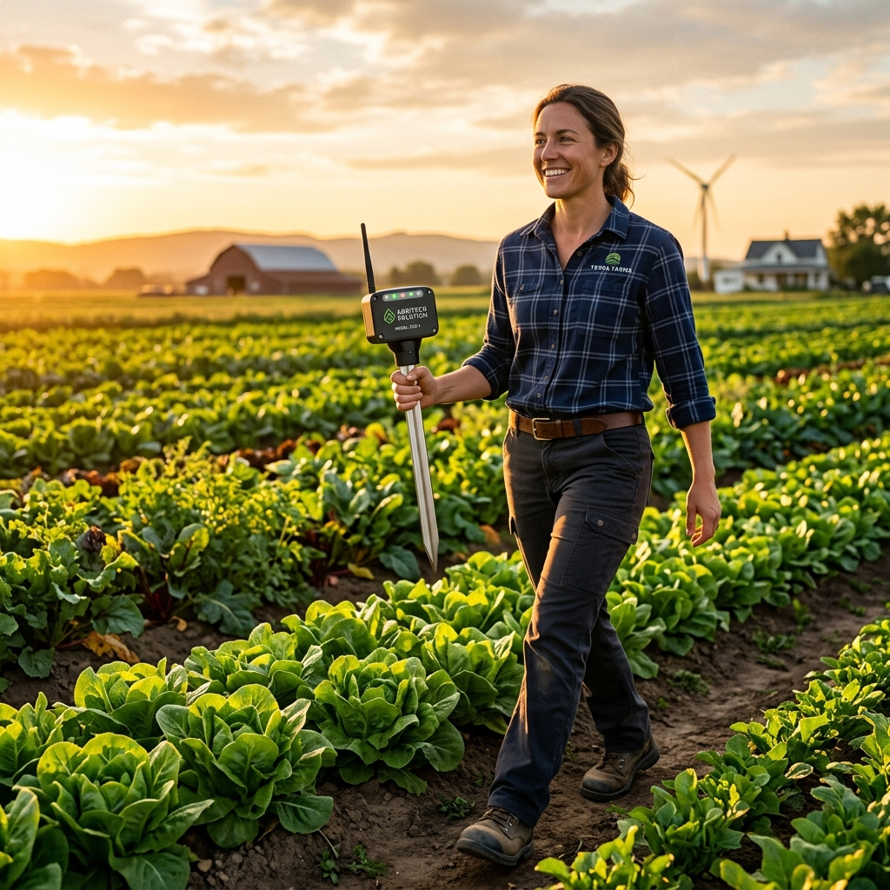

In agriculture, flexibility is everything. Fields change, crops rotate, and farming conditions evolve. Yet most smart irrigation systems are built as fixed infrastructure, limiting their usability to a single location. Oriva introduces a powerful but often overlooked advantage: true portability.
No Permanent Installation Required
Traditional systems require fixed wiring, buried sensors, and complex irrigation system integration. Once installed, they are extremely difficult to relocate or modify. Oriva removes this rigidity completely. It is compact, easy to deploy, and simple to remove and reposition as your needs change.
Moving Across Fields and Seasons
Farmers often rotate crops or shift irrigation zones throughout the season. With Oriva, the same device can be used across different plots without the need for multiple expensive installations. Whether you are moving from a wheat field to a cotton field, the adaptation is instant.
Ideal for Small and Fragmented Land Holdings
In many regions, farms are not continuous but spread across multiple locations. Fixed systems simply fail in such scenarios. Oriva’s portability allows farmers to monitor multiple plots with a single device, providing flexible usage based on the highest priority area at any given time.
Low-Risk Deployment and Experimentation
Because Oriva is not a permanent fixture, farmers can test it in different zones without a long-term commitment or risk of infrastructure damage. It also makes Oriva an excellent field experimentation tool, allowing you to compare soil behavior and crop responses across various parts of your farm easily.
Most systems optimize for technical capability, but Oriva optimizes for real-world usability. Portability transforms it from a stationary product into a flexible farming companion.